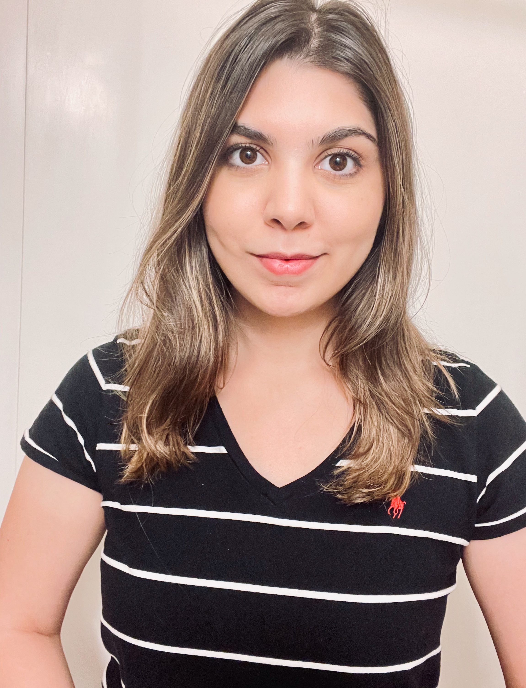

I've joined Grid Dynamics as a Research Scientist, embedded on a Responsible AI team at a tech company you've definitely heard of, but that I can't name publicly. I'm building safety evaluation frameworks for generative AI products that need to work across languages and cultures before reaching users worldwide.
I completed my PhD in Computer Science at the University of Massachusetts Amherst, where I was advised by Dr. Cindy Xiong Bearfield. My research uses an interdisciplinary approach, drawing from HCI, machine learning, psychology, and social science. In my thesis, I investigated how language and visual design in AI systems affect perceptions of fairness, bias, and trust across diverse populations. In my accessibility research, I focus on disability-led innovation with blind and low-vision communities, designing studies that give participants autonomy to define their own problems and create solutions.
Outside of work, I'm a big coffee and food person. The foodie in me is always on the lookout for new coffee shops and restaurants. More recently, I've been into learning latte art at home on my Breville. I also occasionally enjoy kickboxing and pilates to balance out the caffeine.

Recent Highlights
- May 2026 Provocation Paper "The Default Speaker" accepted to CUI 2026!
- May 2026 Defended my dissertation. I'm officially Dr. Aimen Gaba!! 🎓
- Apr 2026 Full paper accepted to ACM FAccT!!
- Jan 2026 Received $16K UMass Dissertation Fellowship
- Oct 2025 Recognized as 2025 MIT EECS Rising Star
- Apr 2025 Invited talk at Georgia Tech on bias perception in AI
- May 2024 Passed PhD Qualifying Exam with distinction
- Summer 2024 Research Scientist/Engineer Intern at Adobe Research